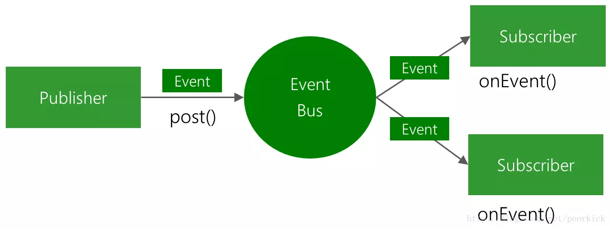

EventBus 3总结
介绍
一个使用发布者/订阅者模式并且低耦合的Android开源库。

使用
简单使用
使用gradle添加到工程
compile 'org.greenrobot:eventbus:3.1.1'
定义事件
事件是纯Java对象，没有其他的特殊要求
public class MessageEvent {
public final String message;
public MessageEvent(String message) {
this.message = message;
}
}
准备订阅者
@Subscribe(threadMode = ThreadMode.MAIN)
public void onMessageEvent(MessageEvent event) {
doSomethingWith(event);
}
注册订阅
@Override
protected void onStart() {
super.onStart();
EventBus.getDefault().register(this);
}
@Override
protected void onStop() {
super.onStop();
EventBus.getDefault().unregister(this);
}
发布事件
EventBus.getDefault().post(new MessageEvent("Hello everyone!"));
传递线程
ThreadMode: POSTING
默认模式，事件的传递是同步完成的，发布者和订阅者在同一线程。这种模式下的事件处理方法必须快速返回，避免阻塞发布事件的线程。
ThreadMode: MAIN
订阅者将在Android的主线程中调用。
ThreadMode: BACKGROUND
订阅者将在后台线程中调用。如果发布线程不是主线程，事件处理程序方法将直接在发布线程中调用。 如果发布线程是主线程，EventBus使用单个后台线程来按顺序传递所有事件。 使用此模式的事件处理方法应尽快返回以避免阻塞后台线程。
ThreadMode: ASYNC
事件处理方法在单独的线程中调用。
优先级
在相同的传递线程（ThreadMode）中，较高优先级的订阅者将在其他优先级较低的订阅者之前接收事件。 默认优先级为0。
@Subscribe(priority = 1);
public void onEvent(MessageEvent event) {
...
}
注意：优先级不影响不同线程模式的订阅者之间的传递顺序！
事件取消
通过从订阅者的事件处理方法调用cancelEventDelivery（Object event）来取消事件传递过程。 任何其他活动传送将被取消，后续订阅者将不会收到活动。
/ Called in the same thread (default)
@Subscribe
public void onEvent(MessageEvent event){
// Process the event
...
// Prevent delivery to other subscribers
EventBus.getDefault().cancelEventDelivery(event) ;
}
事件通常由更高优先级的订阅者取消。 取消仅限于在发布线程（ThreadMode.PostThread）中运行的事件处理方法。
粘性事件
事件的订阅在事件发布之后 下面表示，一个粘性事件发布了一段时间以前：
EventBus.getDefault().postSticky(new MessageEvent("Hello everyone!"));
现在一个新的活动开始。 在注册期间，所有粘性订阅者方法将立即获得先前发布的粘性事件：
@Override
public void onStart() {
super.onStart();
EventBus.getDefault().register(this);
}
@Subscribe(sticky = true, threadMode = ThreadMode.MAIN)
public void onEvent(MessageEvent event) {
doSomethingWith(event);
}
@Override
public void onStop() {
EventBus.getDefault().unregister(this);
super.onStop();
}
最后一个粘性事件在注册时自动传递给匹配的订阅者, 需要移除（消费）粘性事件才能使得它们不再被递送。
MessageEvent stickyEvent = EventBus.getDefault().getStickyEvent(MessageEvent.class);
// Better check that an event was actually posted before
if(stickyEvent != null) {
// "Consume" the sticky event
EventBus.getDefault().removeStickyEvent(stickyEvent);
// Now do something with it
}
或者：
MessageEvent stickyEvent = EventBus.getDefault().removeStickyEvent(MessageEvent.class);
// Better check that an event was actually posted before
if(stickyEvent != null) {
// Now do something with it
}
订阅者索引
ProGuard
在ProGuard配置文件（proguard.cfg）中使用以下规则以防止订阅者被删除。
-keepattributes *Annotation*
-keepclassmembers class ** {
@org.greenrobot.eventbus.Subscribe <methods>;
}
-keep enum org.greenrobot.eventbus.ThreadMode { *; }
# Only required if you use AsyncExecutor
-keepclassmembers class * extends org.greenrobot.eventbus.util.ThrowableFailureEvent {
<init>(java.lang.Throwable);
}